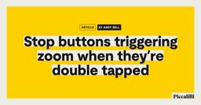

Piccalilli - Everything
https://piccalil.li/
Premium courses, articles, links and newsletters that give you a real-world, industry specific education that actually matters and that will far outlive any hype and help you level up your career.
フィード

The Index: Issue #199
Piccalilli - Everything
Blurry before beautiful: image previews for the webA very good looking proposal!The root scroller and how not to lose itYet another in-depth, fantastic article by Kilian at Polypane.fonts.xyzYou know us by now: we see a good place to get fonts and we share it. This is a very nice offering with loads to choose from.“AI, make the website good”With these seismic changes, I will continue to make the argument that craft defined as caring about the quality of output (independent of the tools used to generate the output) is more important than ever. Caring about what you ship will always have real-world value to visitors/consumers/users real people.Well said, Zach!I spent three sweltering days shredding the high seas at jogging pace, and it ruledA long read but absolutely outstanding prose.It’s about time I tried to explain what progressive enhancement actually isHere's one from the Piccalilli archives that you might have missed to wrap up this issue.P.S. this is a good website.Sponsor messag
1日前

Stop buttons triggering zoom when they’re double tapped
Piccalilli - Everything
I stumbled across this great project by Barry Prendergast. It's a web-based radio player with a lush UI. On mobile I spotted that as I was rapidly flicking through the stations to find one that was on air, the browser was zooming in and out.Here's a screen clip:Watch the video.I thought this behaviour was related to their viewport meta tag setup, but they have that set up perfectly:<meta name="viewport" content="width=device-width, initial-scale=1.0">Now, you could prevent the zooming by adding , maximum-scale=1.0, user-scalable=no to the content attribute, but don't do that because it prevents zooming at all, which is a WCAG violation.What's actually happening here is the browser is responding to the double tap gesture, which in the case of Safari on iOS, zooms into the button element I'm tapping. Luckily there's a CSS one-liner for us that gets the job done..button { touch-action: manipulation;}As per MDN:Enable panning and pinch zoom gestures, but disable additional non-standard ges
3日前

The Index: Issue #198
Piccalilli - Everything
You’ll miss publishers when they’re goneYet again, the industry has been let down by DigitalOcean and their abandonment of CSS-Tricks. It's time to step up and protect publishers whose goal is simply, to educate and share knowledge.It’s official: Airline websites are slow, but they don’t have to beThe great folks at Calibre just don't miss. Another great deep-dive.Gigs worth leaving the house forNothing sounds good is a great service and they've expanded with this immense resource for finding gigs near you.BBC News RSS Feeds (that don't suck!)BBC News get a lot wrong, including their RSS feeds, so Dan has fixed that part at least.Snail racing simulatorThis is just delightful.A highly configurable switch component using modern CSS techniquesHere's one from the Piccalilli archives that you might have missed to wrap up this issue.P.S. this is a good website from personalsit.es.Sponsor messageOur huge 35% discount on all courses ends on Tuesday. Use the coupon code PRICEFALL at checkout.Do
8日前
A decent custom checkbox pattern for until ::checkmark is ready
Piccalilli - Everything
Now that we can better customise <select> elements, it's only natural to side-eye other form <input> types that have caused us visual headaches.Sure, we should be applying the lightest of touches to form elements, especially, but even with a bit of visual-massaging, checkboxes are limited, aside from a bit of accent-color.See the Pen Standard checkbox with accent colour by Andy Bell (@piccalilli) on CodePen.There is a brighter future incoming, if you're to read the spec:The ::checkmark pseudo-element represents an indicator of whether the item is checked, and is present on checkboxes, radios, and option elements.— W3C forms level 1Match that with appearance: base, which is also incoming, and we're looking at this sort of CSS:input[type="checkbox"] { appearance: base;}input[type="checkbox"]::checkmark { content: url("data:image/svg+xml,%3Csvg aria-hidden='true' focusable='false' width='24' height='24' viewBox='0 0 24 24' xmlns='http://www.w3.org/2000/svg'%3E %3Cpath fill='none' stroke='
9日前
The Index: Issue #197
Piccalilli - Everything
Mindful Design ProductsThis is exactly what we need to counter the great slopification of what used to be useful products. Calm, considered and above all, useful.Scott's written about the why here, too.How the heck do record players work?An absolutely fascinating read with some delightful multi-media demos that really help you understand.CSS Layout News in the ATmosphereRachel's newsletter is one of our all time favourites here. Great to see it back!Using maths to balance your heading stylesYou know us, if it's type scale related, we're interested.Donnie had a good follow-up article too.An Ode to linksWe must never forget how lucky we are to have links.Publishing on the Atmosphere with Standard.siteHere's one from the Piccalilli archives that you might have missed to wrap up this issue.P.S. this is a good website.Sponsor messageThe summer is over and the autumn (or fall, for our American friends) is here, so we're offering a huge 35% discount on all courses if you use the coupon code P
16日前